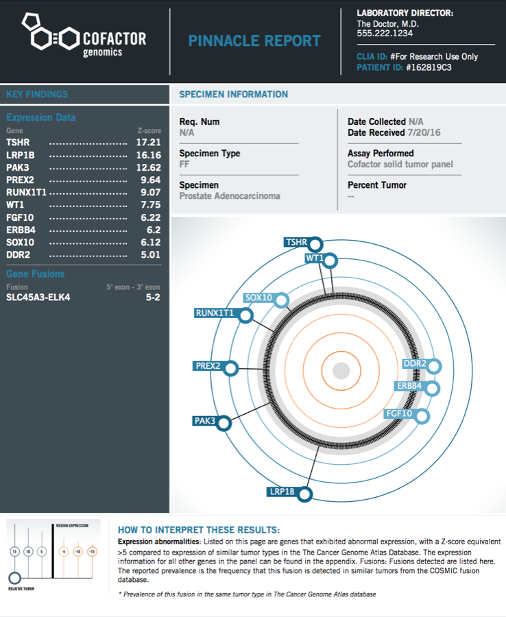
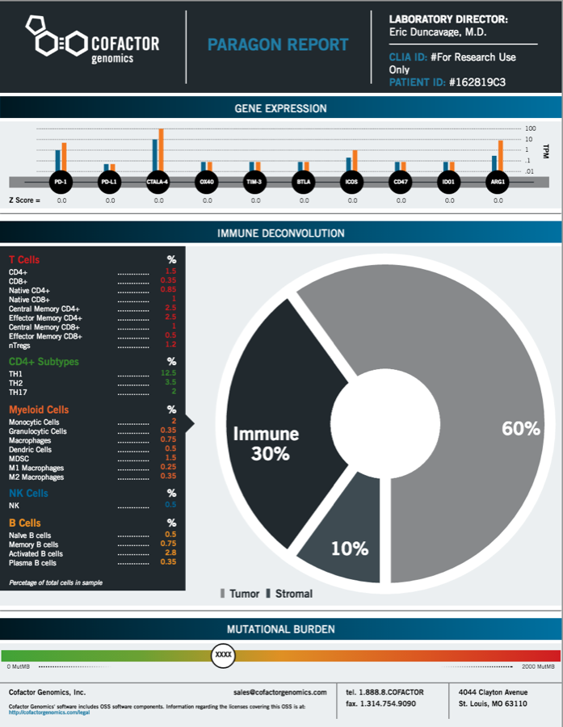
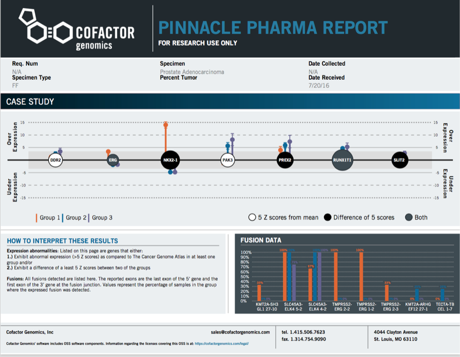
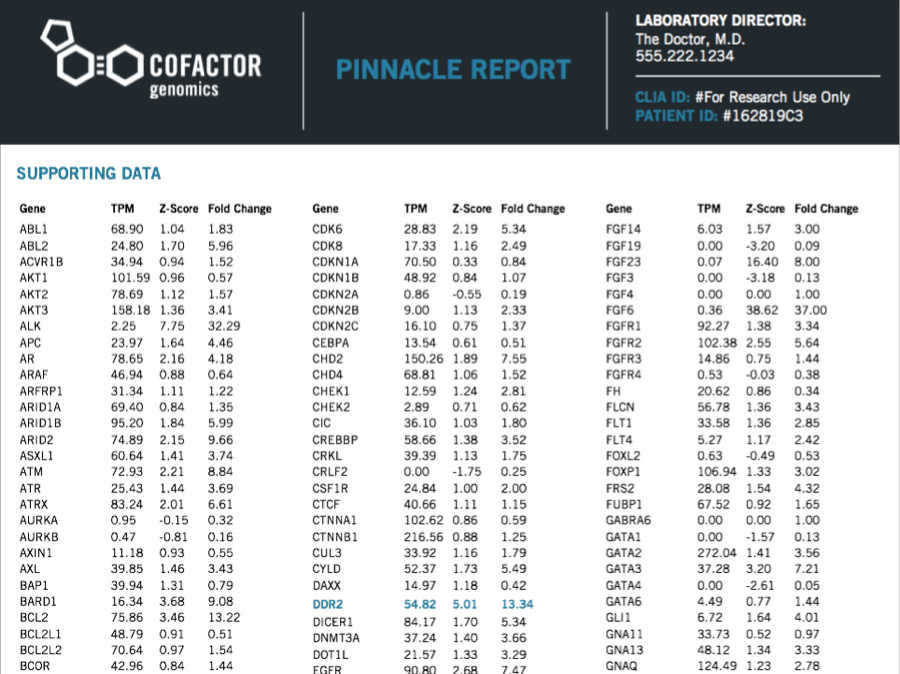

Project · Software & science
Cofactor Genomics
RNA-sequencing tumor reports — circular D3 visualizations of each sample's expression fingerprint, rendered to PDF in the lab pipeline.
- Since
- 2016
Creating cutting edge genomics reports - with Cofactor Genomics.
Cofactor Genomics created a tumor screen using their cutting edge RNA Sequencing platform and they were trying to find a way to visualization gene expression in a way that captured each samples unique gene expression fingerprint. Working with a designer they devised a circular design - but needed help translating the data (stored in CSV files) to a reproducible report.
I created a script in NodeJS that leveraged D3JS to create the visualization in HTML and then render that HTML to a PDF using PhantomJS. This could be run as a final step in their reporting pipeline and integrate easily into their laboratory information management system.
Screens · from the site



